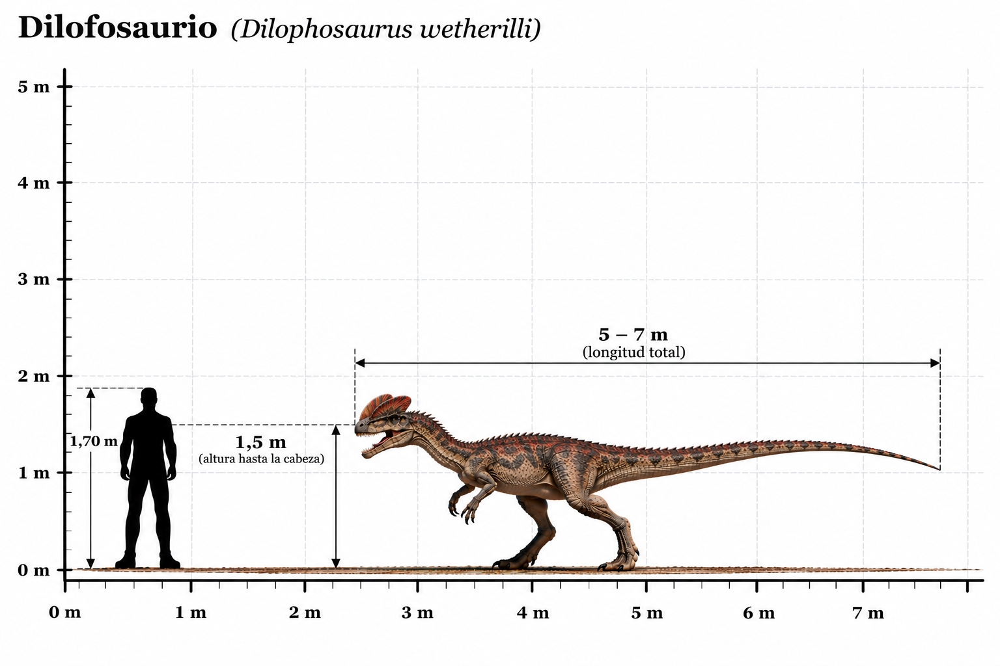

Dilophosaurus wetherilli

El Dilophosaurus wetherilli fue un dinosaurio terópodo carnívoro que habitó América del Norte durante el Jurásico temprano, hace aproximadamente 193 millones de años. Su nombre significa "lagarto de dos crestas", en referencia a las dos grandes crestas óseas situadas sobre su cráneo, una a cada lado. Estas crestas eran relativamente delgadas y probablemente desempeñaban funciones de exhibición o reconocimiento entre individuos, más que de combate. Poseía un cuerpo esbelto, un cuello largo, poderosas patas traseras y brazos desarrollados con manos provistas de garras. Fue uno de los grandes depredadores de su época, cuando todavía no habían aparecido muchos de los gigantescos terópodos que dominarían los ecosistemas durante el Jurásico tardío y el Cretácico. A diferencia de su representación en algunas películas, no existen evidencias científicas de que pudiera escupir veneno ni de que tuviera un collar desplegable alrededor del cuello.
- Grupo: Terópodo.
- Familia: Dilophosauridae (dilofosáuridos, clasificación discutida).
- Período: Jurásico temprano (hace aproximadamente 193 millones de años).
- Alimentación: Carnívoro.
- Longitud: Aproximadamente 6–7 metros.
- Altura: Aproximadamente 1,5–2 metros hasta la cadera.
- Localización: América del Norte (actual Estados Unidos).
